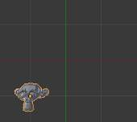
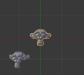
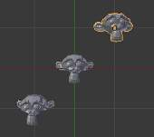

Undo and Redo¶
The commands listed below will let you roll back an accidental action, redo your last action, or let you choose to recover to a specific point, by picking from a list of recent actions recorded by Blender.
Undo¶
If you want to undo your last action, just press Ctrl-Z
See also
Editing Preferences section on undo to change defaults.
Redo¶
To roll back your Undo action, press Ctrl-Shift-Z
Redo Last¶
Redo Last is short for Redo(ing your) Last (Action).
Hitting F6 after an action will present you a context-sensitive
Pop-Up menu based on your last action taken and the Mode and Editor in which Blender is being used.
For example, if your last action was a rotation in 物体模式,
Blender will show you the last value changed for the angle (see Fig. Redo last. left),
where you can change your action back completely by typing Numpad0.
There are other useful options, based on your action context,
and you cannot only Undo actions, but change them completely using the available options.
If you are in 编辑模式, Blender will also change its contents based on your last action taken. In our second example (at the right), the last action taken was a Vertex Move; we did a Scale on a Face, and, as you can see, the contents of the Pop-Up menu are different, because of your mode (编辑模式). (See Fig. Redo last. right)
Redo last.
Tip
操作 using Redo Last
Some operations produce particularly useful results if you tweak their parameters with the F6 Menu.
Take, for example, adding a Circle. If you reduce the Vertex count to 3, you get a perfect equilateral triangle.
Undo History¶
The Undo History Menu.
There is also a Undo History of your actions, recorded by Blender.
You can access the history with Ctrl-Alt-Z.
Rolling back actions using the Undo History feature will take you back to the
action you choose. Much like how you can alternate between going backward in
time with Ctrl-Z and then forward with Ctrl-Shift-Z,
you can hop around on the Undo timeline as much as you want as long as you do not make a new change.
Once you do make a new change, the Undo History is truncated at that point.
Repeat Last¶
The Repeat Last feature will Repeat your last action when you press Shift-R.
In the example 图像s below, we duplicated a Monkey Mesh,
and then we moved the Object a bit.
Using repeat Shift-R, the Monkey was also duplicated and moved.

Suzanne. |

After a |

After a |
Repeat History¶
The Repeat Menu.
The Repeat History feature will present you a list of the last repeated actions,
and you can choose the actions you want to repeat.
It works in the same way as the Undo History, explained above,
but the list contains only repeated actions. To access Repeat History, use F3.
Note
Blender uses two separate Histories, one dedicated for the 编辑模式, and one dedicated for the 物体模式.
Important
When you quit Blender, the complete list of user actions will be lost, even if you save your file before quitting.
See also
问题排查 section on Recovering your lost work